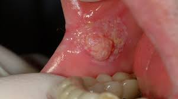

Criado no Quizur
Criado no Quizur
Fatores Etológicos e Origem da Neoplasia
O câncer de boca não surge de uma causa única, mas sim de um conjunto de fatores que interagem para danificar as células da cavidade oral. O tipo mais frequente é o **carcinoma de células escamosas**, que se desenvolve quando o DNA dessas células sofre mutações, levando-as a crescer de forma descontrolada.
Os principais fatores de risco são o **tabaco** e o **álcool**. O fumo, em qualquer forma, introduz substâncias cancerígenas diretamente na boca e, quando associado ao consumo excessivo de bebidas alcoólicas, o risco aumenta dramaticamente em um efeito de sinergia.
Outros elementos importantes contribuem para o desenvolvimento da doença, como a **infecção pelo vírus HPV**, que é uma causa crescente, especialmente na região da orofaringe. A exposição desprotegida ao **sol** é o principal fator de risco para o câncer de lábio, e fatores como **má higiene bucal** e uma **dieta pobre** em vegetais e frutas também podem facilitar as alterações celulares. Em resumo, a origem do câncer de boca reside no acúmulo de danos genéticos nas células da boca, sendo o estilo de vida o principal motor dessas alterações.
Abordagens Terapêuticas e Tratamento
O tratamento para o **câncer de boca** é altamente individualizado e planejado com base no **estágio da doença** – considerando o tamanho e a profundidade do tumor e se houve disseminação para linfonodos ou outras partes do corpo – além da localização da lesão e do estado de saúde geral do paciente. Geralmente, o plano terapêutico envolve uma abordagem **multidisciplinar**, combinando diferentes modalidades.
A **cirurgia oncológica** é a principal forma de tratamento, especialmente nos estágios iniciais, com o objetivo de remover completamente o tumor e uma margem de segurança de tecido saudável. A **remoção do tumor (ressecção)** pode envolver partes do lábio, língua, gengiva ou maxilar. Frequentemente, é necessário o **esvaziamento cervical (dissecção do pescoço)** para remover os gânglios linfáticos suspeitos de metástase, ou até mesmo de forma preventiva. Em casos de grandes ressecções, a **cirurgia reconstrutiva** é essencial para restaurar a aparência e as funções vitais, como a fala e a deglutição.
A **radioterapia** utiliza radiação de alta energia para destruir as células. É comumente empregada como **tratamento pós-operatório** para eliminar quaisquer células remanescentes e reduzir o risco de recorrência. Para tumores muito pequenos ou em pacientes inaptos à cirurgia, pode ser o tratamento principal.
A **quimioterapia** utiliza medicamentos para destruir as células cancerosas em todo o corpo. O uso combinado de quimioterapia e radioterapia, a **quimiorradioterapia**, é uma abordagem comum para tumores mais avançados, pois a quimioterapia atua como um sensibilizador. A quimioterapia também pode ser usada antes da cirurgia (**neoadjuvante**) para reduzir o tumor, ou após a cirurgia (**adjuvante**) para diminuir o risco de recidiva.
Abordagens mais recentes incluem as **terapias alvo**, que utilizam medicamentos que agem em características específicas das células cancerosas, e a **imunoterapia**, que estimula o próprio sistema imunológico do paciente a reconhecer e destruir as células malignas. A imunoterapia é uma opção crescente, especialmente em casos de doença avançada ou recorrente.